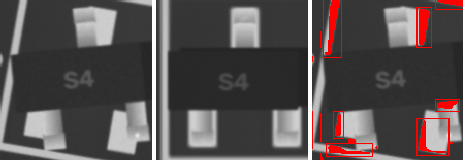
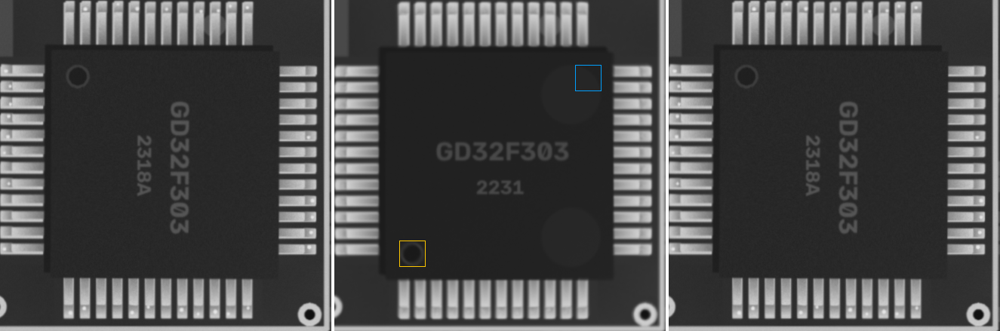
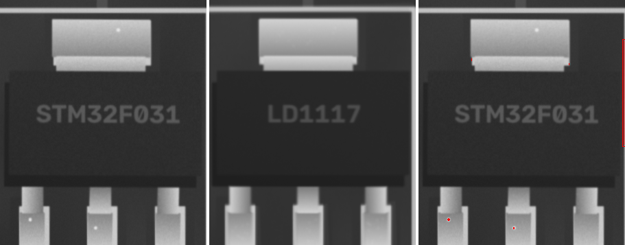

S4 · SOT-23
ROTATED

ncc 0.743 · ncc_thr 0.6 · ncc_180 0.509 · mad 4.8 · mad_thr 7.2 · mad_180 10.6 · dx_mm -0.047 · dy_mm 0.07 · dtheta_deg 10 · anomaly_px 1244
4k7 · 0402
MISSING

ncc 0.817 · ncc_thr 0.6 · mad 34.6 · mad_thr 14.9 · dx_mm -0.023 · dy_mm 0.023 · dtheta_deg -2 · anomaly_px 192
GD32F303 · LQFP-48
POLARITY

ncc 0.773 · ncc_thr 0.6 · mad 2.0 · mad_thr 7.8 · mark_ncc {'0': 0.019, '90': 0.046, '180': -0.121, '270': 0.841} · dx_mm 0.047 · dy_mm 0.0 · dtheta_deg -0.0 · anomaly_px 0
STM32F030 · TSSOP-20
MISSING

ncc 0.195 · ncc_thr 0.6 · ncc_180 0.255 · mad 12.5 · mad_thr 7.3 · mark_ncc {'0': 0.134, '180': 0.024} · dx_mm 0.0 · dy_mm 0.047 · dtheta_deg -0.0 · anomaly_px 5493
LD1117 · SOT-223
ANOMALY

ncc 0.821 · ncc_thr 0.6 · ncc_180 0.246 · mad 1.5 · mad_thr 7.1 · mad_180 7.4 · dx_mm -0.116 · dy_mm -0.047 · dtheta_deg -0.0 · anomaly_px 152
100u · CP_Elec_5x5.8
ncc 0.996 · ncc_thr 0.6 · mad 2.6 · mad_thr 8.6 · mark_ncc {'0': 0.996, '180': -0.29} · dx_mm -0.023 · dy_mm -0.023 · dtheta_deg -0.0 · anomaly_px 0
22p · 0805
ncc 0.969 · ncc_thr 0.6 · mad 4.9 · mad_thr 8.4 · dx_mm 0.07 · dy_mm -0.023 · dtheta_deg -0.0 · anomaly_px 0
22p · 0402
ncc 0.882 · ncc_thr 0.6 · mad 7.7 · mad_thr 12.9 · dx_mm 0.023 · dy_mm -0.023 · dtheta_deg -2.0 · anomaly_px 0
4u7 · 0402
ncc 0.955 · ncc_thr 0.6 · mad 6.5 · mad_thr 9.4 · dx_mm 0.0 · dy_mm 0.0 · dtheta_deg -0.0 · anomaly_px 0
100n · 1206
ncc 0.979 · ncc_thr 0.6 · mad 3.9 · mad_thr 8.0 · dx_mm 0.0 · dy_mm 0.0 · dtheta_deg -0.0 · anomaly_px 0
100n · 0603
ncc 0.972 · ncc_thr 0.6 · mad 6.3 · mad_thr 9.3 · dx_mm 0.0 · dy_mm 0.0 · dtheta_deg -0.0 · anomaly_px 0
10u · 0805
ncc 0.975 · ncc_thr 0.6 · mad 5.0 · mad_thr 8.3 · dx_mm 0.0 · dy_mm 0.023 · dtheta_deg -0.0 · anomaly_px 0
4u7 · 0603
ncc 0.923 · ncc_thr 0.6 · mad 6.8 · mad_thr 9.4 · dx_mm -0.093 · dy_mm -0.023 · dtheta_deg -0.0 · anomaly_px 0
10u · 0603
ncc 0.966 · ncc_thr 0.6 · mad 6.9 · mad_thr 10.7 · dx_mm 0.023 · dy_mm 0.0 · dtheta_deg -0.0 · anomaly_px 0
100n · 0402
ncc 0.971 · ncc_thr 0.6 · mad 6.7 · mad_thr 12.8 · dx_mm 0.023 · dy_mm 0.0 · dtheta_deg -0.0 · anomaly_px 0
1u · 0402
ncc 0.977 · ncc_thr 0.6 · mad 6.4 · mad_thr 10.6 · dx_mm -0.023 · dy_mm 0.0 · dtheta_deg -0.0 · anomaly_px 0
Tantalum_Case-A · Tantalum_Case-A
ncc 0.979 · ncc_thr 0.6 · mad 2.5 · mad_thr 8.4 · mark_ncc {'0': 0.998, '180': 0.277} · dx_mm -0.047 · dy_mm -0.07 · dtheta_deg -0.0 · anomaly_px 0
22p · 0402
ncc 0.963 · ncc_thr 0.6 · mad 6.1 · mad_thr 11.4 · dx_mm -0.023 · dy_mm 0.0 · dtheta_deg -0.0 · anomaly_px 0
22p · 0603
ncc 0.973 · ncc_thr 0.6 · mad 6.0 · mad_thr 8.7 · dx_mm -0.023 · dy_mm 0.0 · dtheta_deg -0.0 · anomaly_px 0
4u7 · 0603
ncc 0.951 · ncc_thr 0.6 · mad 6.5 · mad_thr 9.6 · dx_mm -0.047 · dy_mm 0.0 · dtheta_deg -0.0 · anomaly_px 0
10u · 0603
ncc 0.959 · ncc_thr 0.6 · mad 6.3 · mad_thr 9.9 · dx_mm 0.047 · dy_mm 0.0 · dtheta_deg -0.0 · anomaly_px 0
1u · 0805
ncc 0.971 · ncc_thr 0.6 · mad 5.2 · mad_thr 8.3 · dx_mm 0.023 · dy_mm 0.023 · dtheta_deg -0.0 · anomaly_px 0
4u7 · 0402
ncc 0.976 · ncc_thr 0.6 · mad 6.8 · mad_thr 10.2 · dx_mm 0.0 · dy_mm 0.0 · dtheta_deg -0.0 · anomaly_px 0
4u7 · 0805
ncc 0.973 · ncc_thr 0.6 · mad 5.1 · mad_thr 8.3 · dx_mm 0.023 · dy_mm -0.023 · dtheta_deg -0.0 · anomaly_px 0
10u · 1206
ncc 0.975 · ncc_thr 0.6 · mad 4.2 · mad_thr 8.3 · dx_mm -0.023 · dy_mm 0.0 · dtheta_deg -0.0 · anomaly_px 0
4u7 · 1206
ncc 0.951 · ncc_thr 0.6 · mad 4.4 · mad_thr 8.4 · dx_mm 0.047 · dy_mm 0.047 · dtheta_deg -0.0 · anomaly_px 0
4u7 · 1206
ncc 0.971 · ncc_thr 0.6 · mad 4.8 · mad_thr 8.6 · dx_mm 0.0 · dy_mm -0.023 · dtheta_deg -0.0 · anomaly_px 0
SOD-123 · SOD-123
ncc 0.996 · ncc_thr 0.6 · mad 1.1 · mad_thr 7.0 · mark_ncc {'0': 0.984, '180': -0.094} · dx_mm 0.023 · dy_mm 0.023 · dtheta_deg -0.0 · anomaly_px 0
SOD-123 · SOD-123
ncc 0.993 · ncc_thr 0.6 · mad 1.0 · mad_thr 7.0 · mark_ncc {'0': 0.939, '180': 0.045} · dx_mm -0.023 · dy_mm 0.023 · dtheta_deg -0.0 · anomaly_px 0
LED_0805 · LED_0805
ncc 0.983 · ncc_thr 0.6 · ncc_180 0.806 · mad 6.3 · mad_thr 9.6 · mark_ncc {'0': 0.014, '180': -0.036} · dx_mm -0.023 · dy_mm -0.023 · dtheta_deg -0.0 · anomaly_px 0
LED_0805 · LED_0805
ncc 0.985 · ncc_thr 0.6 · ncc_180 0.811 · mad 8.5 · mad_thr 9.3 · mark_ncc {'0': -0.067, '180': -0.169} · dx_mm -0.023 · dy_mm 0.0 · dtheta_deg -0.0 · anomaly_px 0
LED_0805 · LED_0805
ncc 0.954 · ncc_thr 0.6 · ncc_180 0.763 · mad 5.8 · mad_thr 9.3 · mark_ncc {'0': -0.023, '180': -0.053} · dx_mm 0.0 · dy_mm -0.047 · dtheta_deg -0.0 · anomaly_px 0
LED_0805 · LED_0805
ncc 0.963 · ncc_thr 0.6 · ncc_180 0.862 · mad 5.0 · mad_thr 8.2 · mark_ncc {'0': -0.041, '180': -0.026} · dx_mm 0.0 · dy_mm -0.047 · dtheta_deg -0.0 · anomaly_px 0
LED_0805 · LED_0805
ncc 0.987 · ncc_thr 0.6 · ncc_180 0.797 · mad 5.9 · mad_thr 8.3 · mark_ncc {'0': 0.062, '180': -0.014} · dx_mm 0.0 · dy_mm 0.023 · dtheta_deg -0.0 · anomaly_px 0
LED_0805 · LED_0805
ncc 0.99 · ncc_thr 0.6 · ncc_180 0.803 · mad 5.1 · mad_thr 8.2 · mark_ncc {'0': -0.128, '180': 0.171} · dx_mm 0.023 · dy_mm 0.0 · dtheta_deg -0.0 · anomaly_px 0
4u7 · L_4x4
ncc 0.988 · ncc_thr 0.6 · mad 5.4 · mad_thr 9.2 · dx_mm 0.0 · dy_mm 0.023 · dtheta_deg -0.0 · anomaly_px 0
4u7 · L_4x4
ncc 0.978 · ncc_thr 0.6 · mad 1.2 · mad_thr 7.1 · dx_mm 0.0 · dy_mm 0.047 · dtheta_deg -0.0 · anomaly_px 0
J3Y · SOT-23
ncc 0.975 · ncc_thr 0.6 · ncc_180 0.541 · mad 1.2 · mad_thr 7.2 · mad_180 6.2 · dx_mm 0.0 · dy_mm -0.023 · dtheta_deg -0.0 · anomaly_px 0
A7 · SOT-23
ncc 0.958 · ncc_thr 0.6 · ncc_180 0.487 · mad 1.8 · mad_thr 7.3 · mad_180 4.4 · dx_mm 0.047 · dy_mm -0.093 · dtheta_deg 2 · anomaly_px 0
A7 · SOT-23
ncc 0.981 · ncc_thr 0.6 · ncc_180 0.371 · mad 1.0 · mad_thr 7.1 · mad_180 13.6 · dx_mm 0.0 · dy_mm -0.093 · dtheta_deg -0.0 · anomaly_px 0
W1 · SOT-23
ncc 0.978 · ncc_thr 0.6 · ncc_180 0.329 · mad 1.1 · mad_thr 7.1 · mad_180 26.4 · dx_mm 0.023 · dy_mm 0.0 · dtheta_deg -2.0 · anomaly_px 0
J3Y · SOT-23
ncc 0.982 · ncc_thr 0.6 · ncc_180 0.38 · mad 1.2 · mad_thr 7.1 · mad_180 3.8 · dx_mm 0.0 · dy_mm 0.047 · dtheta_deg -0.0 · anomaly_px 0
W1 · SOT-23
ncc 0.974 · ncc_thr 0.6 · ncc_180 0.309 · mad 0.9 · mad_thr 7.0 · mad_180 8.9 · dx_mm 0.0 · dy_mm 0.0 · dtheta_deg -0.0 · anomaly_px 0
J3Y · SOT-23
ncc 0.968 · ncc_thr 0.6 · ncc_180 0.352 · mad 1.1 · mad_thr 7.0 · mad_180 22.2 · dx_mm 0.0 · dy_mm 0.023 · dtheta_deg -0.0 · anomaly_px 0
J3Y · SOT-23
ncc 0.981 · ncc_thr 0.6 · ncc_180 0.274 · mad 0.8 · mad_thr 7.0 · mad_180 25.1 · dx_mm -0.023 · dy_mm 0.0 · dtheta_deg -0.0 · anomaly_px 0
10k · 0402
ncc 0.972 · ncc_thr 0.6 · mad 11.6 · mad_thr 19.3 · dx_mm 0.023 · dy_mm 0.0 · dtheta_deg -0.0 · anomaly_px 0
1k · 0603
ncc 0.975 · ncc_thr 0.6 · mad 5.6 · mad_thr 10.2 · dx_mm 0.047 · dy_mm 0.0 · dtheta_deg -0.0 · anomaly_px 0
220 · 0402
ncc 0.986 · ncc_thr 0.6 · mad 8.7 · mad_thr 15.2 · dx_mm 0.023 · dy_mm 0.0 · dtheta_deg -0.0 · anomaly_px 0
10k · 0603
ncc 0.969 · ncc_thr 0.6 · mad 6.9 · mad_thr 10.4 · dx_mm -0.07 · dy_mm 0.0 · dtheta_deg -0.0 · anomaly_px 0
0R · 0805
ncc 0.959 · ncc_thr 0.6 · mad 5.2 · mad_thr 9.3 · dx_mm 0.0 · dy_mm -0.023 · dtheta_deg -0.0 · anomaly_px 0
4k7 · 0603
ncc 0.968 · ncc_thr 0.6 · mad 7.2 · mad_thr 10.2 · dx_mm 0.0 · dy_mm -0.023 · dtheta_deg -0.0 · anomaly_px 0
4k7 · 0402
ncc 0.992 · ncc_thr 0.6 · mad 5.5 · mad_thr 16.1 · dx_mm -0.023 · dy_mm 0.0 · dtheta_deg -0.0 · anomaly_px 0
4k7 · 0805
ncc 0.945 · ncc_thr 0.6 · mad 6.9 · mad_thr 9.4 · dx_mm -0.047 · dy_mm 0.023 · dtheta_deg -0.0 · anomaly_px 0
10k · 1206
ncc 0.953 · ncc_thr 0.6 · mad 4.9 · mad_thr 8.9 · dx_mm 0.0 · dy_mm -0.023 · dtheta_deg -0.0 · anomaly_px 0
220 · 0805
ncc 0.95 · ncc_thr 0.6 · mad 7.4 · mad_thr 9.3 · dx_mm -0.023 · dy_mm 0.047 · dtheta_deg -0.0 · anomaly_px 0
220 · 0603
ncc 0.973 · ncc_thr 0.6 · mad 6.6 · mad_thr 10.6 · dx_mm 0.0 · dy_mm 0.0 · dtheta_deg -0.0 · anomaly_px 0
10k · 1206
ncc 0.948 · ncc_thr 0.6 · mad 4.8 · mad_thr 8.8 · dx_mm -0.047 · dy_mm -0.023 · dtheta_deg -0.0 · anomaly_px 0
1k · 0805
ncc 0.955 · ncc_thr 0.6 · mad 5.4 · mad_thr 9.7 · dx_mm 0.0 · dy_mm 0.0 · dtheta_deg -0.0 · anomaly_px 0
1k · 0603
ncc 0.976 · ncc_thr 0.6 · mad 8.2 · mad_thr 13.0 · dx_mm 0.0 · dy_mm 0.0 · dtheta_deg -0.0 · anomaly_px 0
100k · 0805
ncc 0.953 · ncc_thr 0.6 · mad 5.3 · mad_thr 9.3 · dx_mm 0.023 · dy_mm 0.023 · dtheta_deg -0.0 · anomaly_px 0
220 · 0603
ncc 0.967 · ncc_thr 0.6 · mad 6.3 · mad_thr 10.2 · dx_mm -0.047 · dy_mm 0.0 · dtheta_deg -0.0 · anomaly_px 0
10k · 0805
ncc 0.951 · ncc_thr 0.6 · mad 6.1 · mad_thr 9.5 · dx_mm 0.023 · dy_mm -0.047 · dtheta_deg -0.0 · anomaly_px 0
1k · 0402
ncc 0.98 · ncc_thr 0.6 · mad 9.1 · mad_thr 18.4 · dx_mm 0.0 · dy_mm 0.023 · dtheta_deg -0.0 · anomaly_px 0
0R · 0805
ncc 0.954 · ncc_thr 0.6 · mad 5.7 · mad_thr 9.3 · dx_mm 0.023 · dy_mm -0.047 · dtheta_deg -0.0 · anomaly_px 0
24C02 · SOIC-8
ncc 0.969 · ncc_thr 0.6 · mad 1.2 · mad_thr 7.5 · mark_ncc {'0': 0.878, '180': -0.177} · dx_mm 0.0 · dy_mm 0.0 · dtheta_deg -0.0 · anomaly_px 0
ESP32-C3 · QFN-32
ncc 0.947 · ncc_thr 0.6 · mad 1.1 · mad_thr 7.4 · mark_ncc {'0': 0.986, '90': 0.02, '180': 0.105, '270': 0.012} · dx_mm 0.023 · dy_mm -0.047 · dtheta_deg -0.0 · anomaly_px 0
TL072 · SOIC-8
ncc 0.923 · ncc_thr 0.6 · mad 1.1 · mad_thr 7.2 · mark_ncc {'0': 0.826, '180': 0.062} · dx_mm -0.023 · dy_mm 0.07 · dtheta_deg -0.0 · anomaly_px 0
STM32F030 · TSSOP-20
ncc 0.94 · ncc_thr 0.6 · mad 1.9 · mad_thr 7.6 · mark_ncc {'0': 0.772, '180': 0.046} · dx_mm 0.0 · dy_mm 0.023 · dtheta_deg -0.0 · anomaly_px 0
STM8S105 · TQFP-32
ncc 0.914 · ncc_thr 0.6 · mad 1.6 · mad_thr 7.5 · mark_ncc {'0': 0.957, '90': -0.038, '180': -0.005, '270': 0.002} · dx_mm -0.047 · dy_mm -0.023 · dtheta_deg -0.0 · anomaly_px 0
AMS1117 · SOT-223
ncc 0.977 · ncc_thr 0.6 · ncc_180 0.362 · mad 1.1 · mad_thr 7.1 · mad_180 6.4 · dx_mm -0.047 · dy_mm 0.093 · dtheta_deg -0.0 · anomaly_px 0
LD1117 · SOT-223
ncc 0.977 · ncc_thr 0.6 · ncc_180 0.394 · mad 1.2 · mad_thr 7.3 · mad_180 6.2 · dx_mm 0.023 · dy_mm -0.07 · dtheta_deg -0.0 · anomaly_px 0
Crystal_SMD_3225 · Crystal_SMD_3225
ncc 0.993 · ncc_thr 0.6 · mad 3.9 · mad_thr 9.1 · dx_mm 0.0 · dy_mm -0.047 · dtheta_deg -0.0 · anomaly_px 0